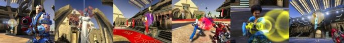
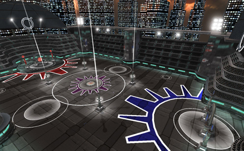

Steel Halo – Commons League
Steel Halo is the rumoured sport played by the Huristar, the legendary Holy Guard of the Emperor. Named in honour of Emperor Zaquen, known to citizens of the Empire as the Steel Halo, the brutal contact sport has gradually filtered through to the outer rim colonies, spread by disgraced Huristar trying to relive their former glory.
Competitors form teams and use a variety of Gravity Rifles to vie for possession of the crown, which must be shot through a goal to score. There are no rules, no penalties, no umpires – the highest score wins.

Features
Steel Halo is a unique first person multiplayer sports simulation for Unreal Tournament 2004.
Play with 7 Gravity Rifles, each with unique capabilities and teamplay interdependencies and strategic combos.
Players can leap, back flip, lunge, slide, charge and hurl in their quest to become the Champions of the Kanonball League.
Compete in a unique collection of arenas spread across the 1000 worlds of the Empire, each a strategic challenge designed to test competitors and teams alike.
Select from an array of start positions on the playfield, from Blitz, Rush, Tandem or Face-off, and learn to dominate your opposition.
Utilise score multiplier targets, deflection surfaces, and skill shot opportunities to increase the value of a goal – and use special teamplay combinations to boost goal scores even higher.
Intuitive HUD elements assist with passing and communication between teammates, and navigation of the arenas.
Revised KARMA collision system sees players being ragdolled if they run into walls, land too fast after using a jump pad, or even into each other.
Experience new health, adrenaline and perceptual awareness systems designed to capture the bone-crushing brutality of non-lethal combat.